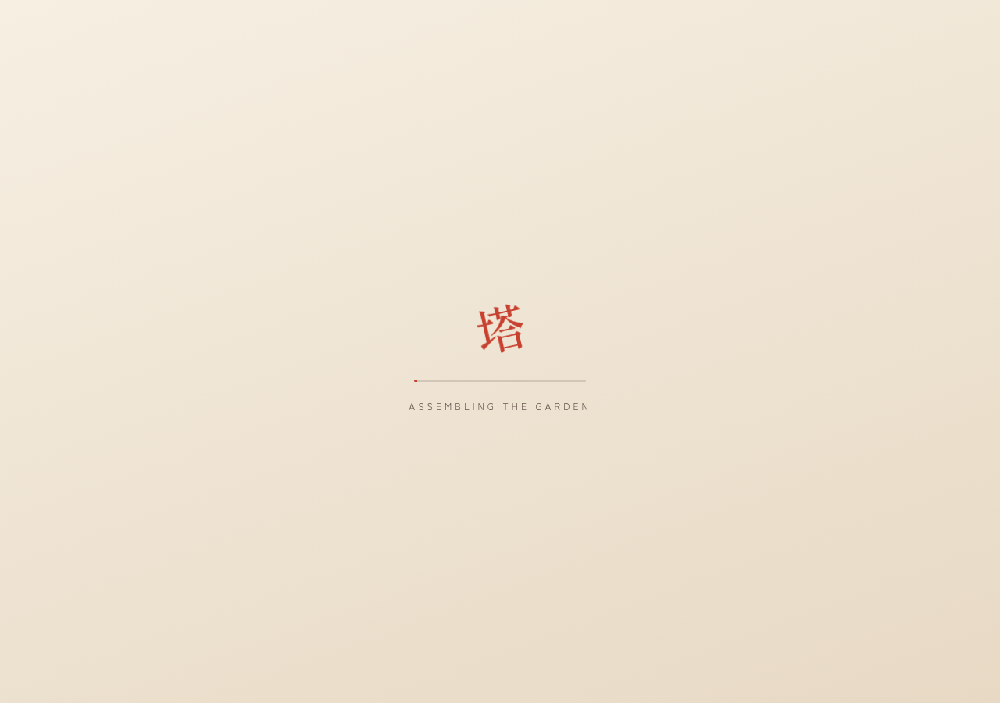
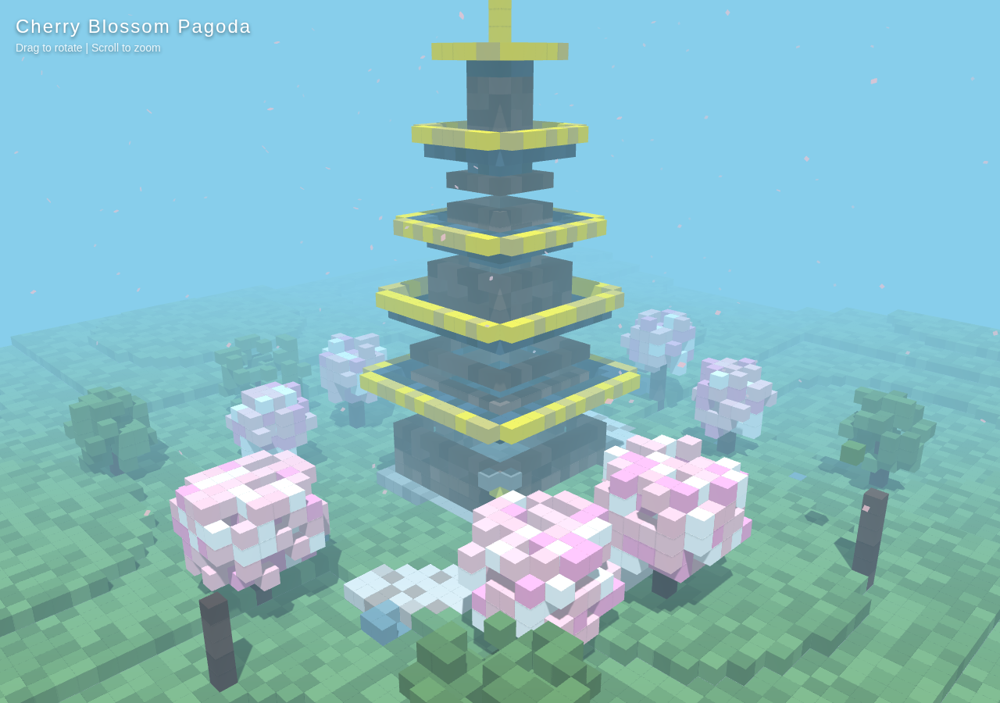
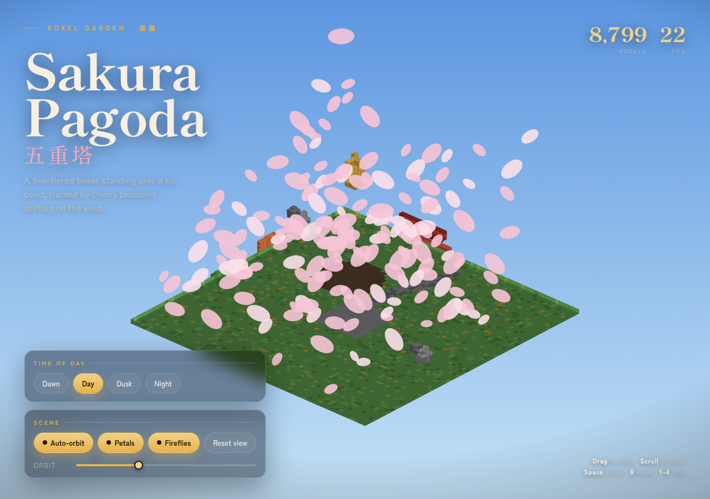
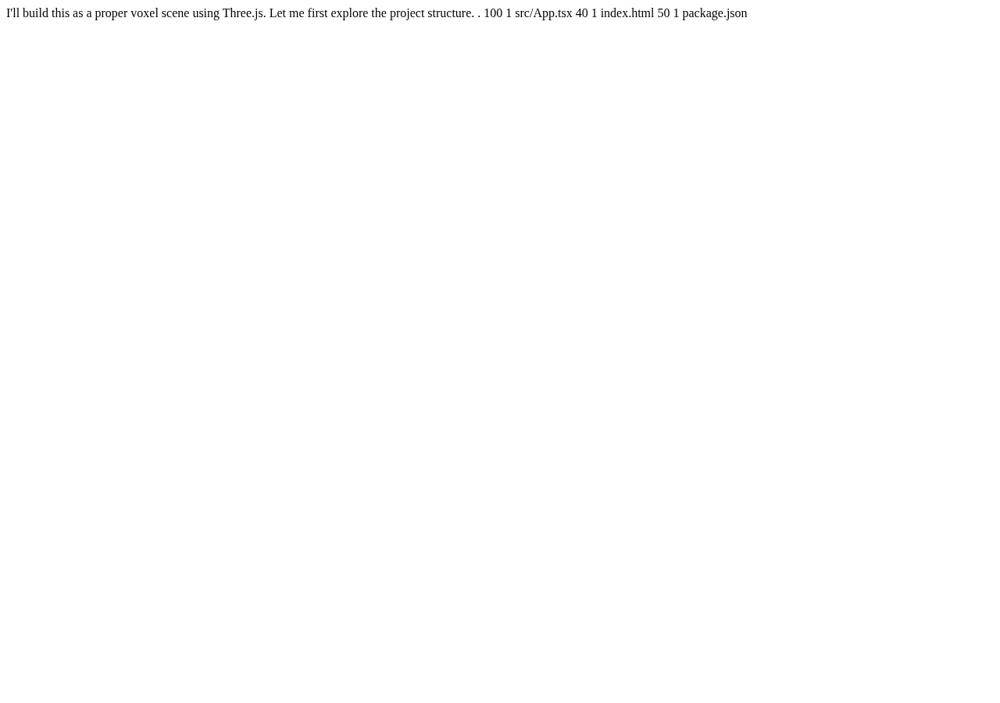
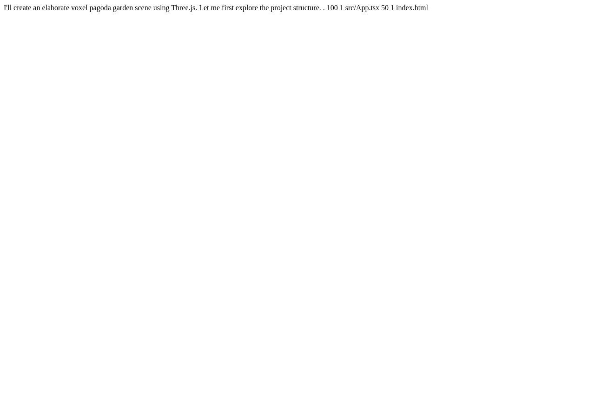
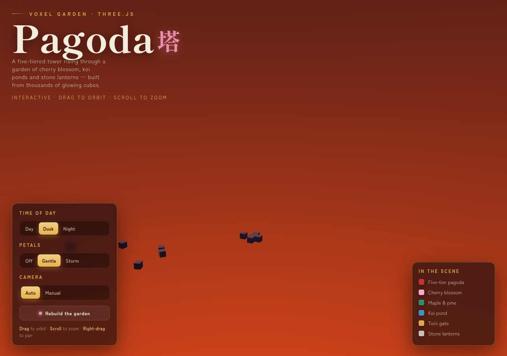
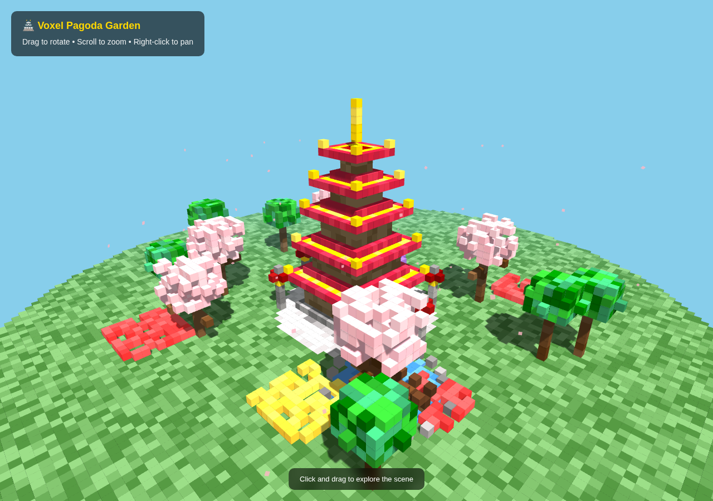
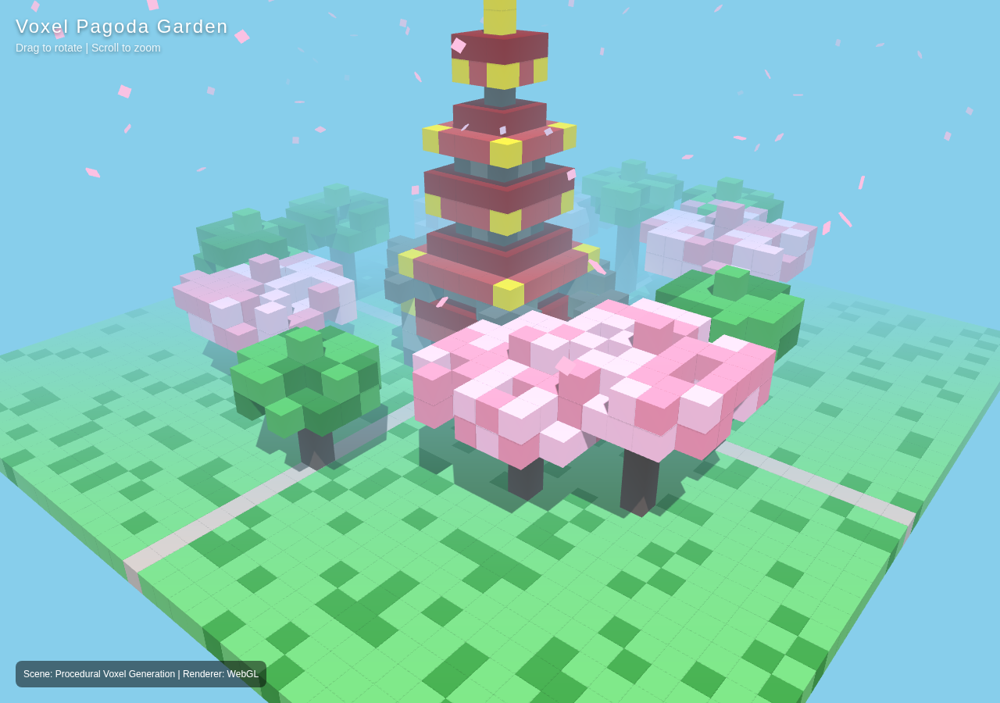
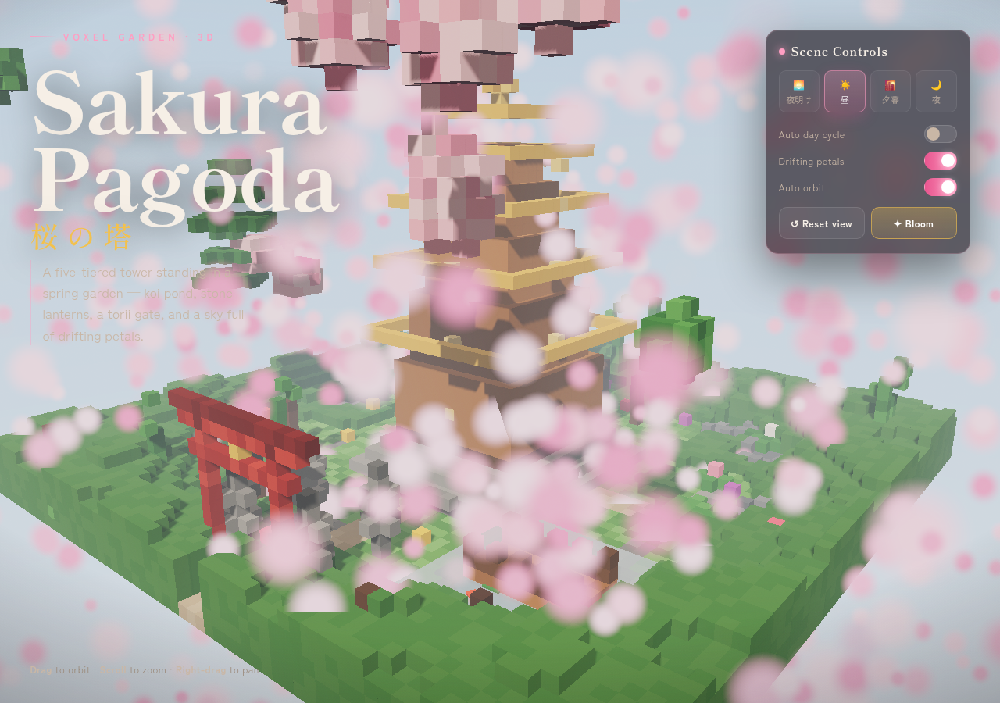

Pagoda follow-up — all samples
No live frames: opening this page does not run model-generated animations. Click-through pages use external CDNs, may fail, and can consume substantial CPU; close them when done.
All planned samples are shown, not a best-of selection. Complete HTML does not guarantee a working scene. Outcomes are observations, not aesthetic scores or a stable success-rate estimate.
Protocol and scope
One original greedy repeat and five stochastic no-tools samples per engine; temperature 0.7, top_p 0.8, top_k 20, min_p 0, seeds 4101-4105, thinking off, max_tokens 16384.
One real Pi SDK trial per engine, read/write/unique-edit/inspect tools, seed 5101, same stochastic sampling, 65536 output tokens total, 16384 per request, 1200 seconds, 12 assistant responses, 3 inspections.
1280x900, observe after a 10-second window, save screenshot and current-route errors. No human repair hints. Close each owned browser before inference; sample CPU before every model request.
Same pinned images/packs as the original run, 262144 context capacity, vision enabled; Kyojin sessions=1 with disk streaming. Protocol, exclusions and replay limitations · All evidence hashes · Archived SDK harness source
Clean Pi SDK final pages
Halogen: clean Pi SDK trial
13,225 output tokens · 12 model requests · 7 local editsAgent stop: 12-response cap (not a token/time limit)
Final browser observation: scene visible; no current-route runtime error.
Open final animated page · Run record

Kyojin: clean Pi SDK trial
7,022 output tokens · 6 model requests · 1 local editsAgent stop: normal completion
Final browser observation: scene visible; no current-route runtime error.
Open final animated page · Run record

Halogen stopped at its 12-response cap; its final post-run check is independent of the agent's two inspections. Kyojin ended normally; its final file matches its last inspection. These are one case each, not an engine-quality verdict. Interactions were not exhaustively tested.
Original-condition repeat: greedy, no tools
Halogen: Runtime error
No scene: ReferenceError rw is not defined in buildPagoda.
5,001 output tokens · complete HTML: trueOpen generated page (may fail) · Raw answer · Request · Captured SSE · Capture record
Kyojin: Incomplete answer: server loop guard
Answer bytes exactly match the old failing sample. Loop guard metadata present; incomplete script; loading overlay remains.
5,216 output tokens · complete HTML: falseOpen generated page (may fail) · Raw answer · Request · Captured SSE · Capture record

Fixed seed 4101: stochastic, no tools
Halogen: Scene visible
Pagoda and blossom garden visibly rendered.
4,476 output tokens · complete HTML: trueOpen generated page (may fail) · Raw answer · Request · Captured SSE · Capture record

Kyojin: Partial scene visible
Terrain, petals and a small/partly obscured tower render; the requested full scene is not clearly presented. Not a runtime-error verdict.
12,615 output tokens · complete HTML: trueOpen generated page (may fail) · Raw answer · Request · Captured SSE · Capture record

Fixed seed 4102: stochastic, no tools
Halogen: No HTML delivered
Response contains unsupported tool-call text; bare request offered no tools.
203 output tokens · complete HTML: falseOpen generated page (may fail) · Raw answer · Request · Captured SSE · Capture record

Kyojin: Runtime error
Loading overlay remains; TypeError v.color.getHex is not a function.
13,467 output tokens · complete HTML: trueOpen generated page (may fail) · Raw answer · Request · Captured SSE · Capture record
Fixed seed 4103: stochastic, no tools
Halogen: No HTML delivered
Response contains unsupported tool-call text; bare request offered no tools.
153 output tokens · complete HTML: falseOpen generated page (may fail) · Raw answer · Request · Captured SSE · Capture record

Kyojin: Main scene not clearly presented
UI and isolated blocks visible, but the pagoda/garden are not recognizable in the captured default view; no attributable runtime error recorded.
15,101 output tokens · complete HTML: trueOpen generated page (may fail) · Raw answer · Request · Captured SSE · Capture record

Fixed seed 4104: stochastic, no tools
Halogen: Scene visible
Pagoda and blossom garden visibly rendered.
5,794 output tokens · complete HTML: trueOpen generated page (may fail) · Raw answer · Request · Captured SSE · Capture record

Kyojin: Unverified: browser timeout
Complete HTML and syntactically valid scripts. Two browser-open attempts timed out, recovery target reads also failed. No verified screenshot; root cause not established.
13,249 output tokens · complete HTML: trueOpen generated page (may fail) · Raw answer · Request · Captured SSE · Capture record
No verified screenshot. Browser navigation timed out; cause not established.
Fixed seed 4105: stochastic, no tools
Halogen: Scene visible
Pagoda and blossom garden visibly rendered.
4,672 output tokens · complete HTML: trueOpen generated page (may fail) · Raw answer · Request · Captured SSE · Capture record

Kyojin: Scene visible
Pagoda, garden and blossoms visibly rendered; no current-route runtime error recorded.
14,874 output tokens · complete HTML: trueOpen generated page (may fail) · Raw answer · Request · Captured SSE · Capture record

How to read these results
Halogen delivered complete HTML in 3/5 stochastic samples; Kyojin in 5/5. This is not a 3/5 versus 5/5 working-page comparison: runtime errors, partial scenes and the unverified browser timeout remain visible above. Bare/pilot timings were contaminated by animated browser CPU load and are not used to compare speed. A same-seed technical recapture after a collection cutoff is disclosed in the protocol, not counted as an engine failure.
AI assisted the test planning, scripts, troubleshooting, analysis and write-up. That is not independent validation; the captured records and images are provided for inspection.